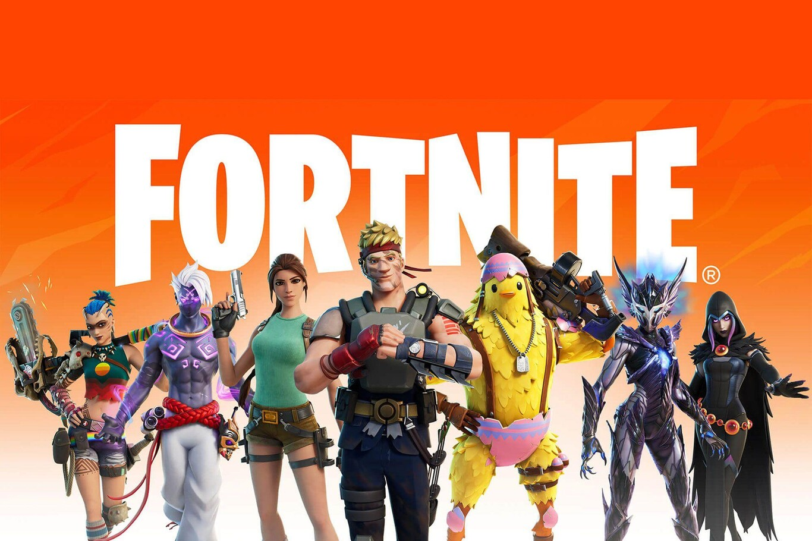

Desde sus humildes inicios hasta su vibrante presente y un futuro lleno de posibilidades, los
videojuegos han sido una ventana a la imaginación, la tecnología y la innovación. En este museo,
exploraremos el fascinante recorrido de esta forma de entretenimiento, desde las primeras consolas
que encendieron la chispa de una revolución digital hasta los dispositivos actuales que nos sumergen
en mundos interactivos. Acompáñanos en este viaje para descubrir cómo los videojuegos han
evolucionado, cómo han influido en la cultura global y qué nos depara el futuro en este apasionante
universo interactivo.
Videojuegos retro
El Pasado de los Videojuegos: Los Cimientos de una Industria Global
Los Primeros Juegos Experimentales (1950-1970)
El concepto de los videojuegos comenzó en los laboratorios de investigación, mucho antes de que se
comercializara como un producto de consumo. Los primeros videojuegos no tenían gráficos avanzados ni
tecnología compleja, pero sentaron las bases de lo que vendría después.
Tennis for Two (1958): Considerado uno de los primeros videojuegos,
fue desarrollado por el
físico William Higinbotham. Este sencillo juego de tenis se jugaba en un osciloscopio, y aunque
no era comercial, demostró que las computadoras podían utilizarse para el entretenimiento.
Spacewar! (1962): Desarrollado por Steve Russell y otros estudiantes
del MIT, fue uno de los primeros videojuegos de computadora jugado en la minicomputadora PDP-1.
Aunque no se vendió comercialmente, influyó en muchos desarrolladores posteriores.
Spacewar!
El Nacimiento de las Consolas Caseras (1970-1980)
Con la tecnología avanzando rápidamente en los años 70, se crearon las primeras consolas de
videojuegos caseras. Esta fue la primera vez que las personas pudieron llevar la experiencia de
juego a sus hogares, lo que cambiaría para siempre el panorama del entretenimiento.
Magnavox Odyssey (1972): Fue la primera consola casera de la historia.
Aunque sus capacidades eran
limitadas (no tenía sonido, solo gráficos muy básicos), permitía a los jugadores usar tarjetas
para
cambiar los juegos. Su mayor logro fue abrir la puerta a la idea de los videojuegos en el hogar,
aunque no alcanzó gran popularidad.
Atari 2600 (1977): La verdadera pionera de la industria de las
consolas. Fue una de las primeras en
utilizar cartuchos intercambiables, lo que permitía a los jugadores cambiar de juego sin comprar
una
nueva consola. Títulos icónicos como Space Invaders, Pitfall! y Pac-Man ayudaron a que el Atari
2600
se convirtiera en un éxito rotundo y popularizó los videojuegos a nivel mundial.
Atari 2600
La Explosión de las Máquinas Arcade (Finales de los 70 y 80)
Paralelamente al surgimiento de las consolas caseras, las máquinas arcade comenzaron a dominar las
salas recreativas en todo el mundo. Los videojuegos arcade introdujeron a una generación completa a
experiencias interactivas que eran hasta ese momento inigualables en términos de gráficos y
jugabilidad.
Pong (1972): Creado por Atari, fue uno de los primeros éxitos
comerciales en el mundo de los
videojuegos arcade. Pong era una simple simulación de tenis, pero su adictiva jugabilidad lo
convirtió en un fenómeno cultural.
Space Invaders (1978): Este juego, desarrollado por Taito, fue uno de
los primeros shooters de gran
éxito. La mecánica del juego, donde los jugadores defendían la Tierra de invasores alienígenas,
fue
tan revolucionaria que marcó el inicio de una nueva era para los videojuegos arcade.
Pac-Man (1980): Diseñado por Namco, Pac-Man se convirtió en un
fenómeno global, rompiendo récords de
popularidad en las salas de arcade. A diferencia de otros videojuegos de la época, Pac-Man no
estaba
basado en disparos ni acción violenta, lo que lo hizo accesible a un público más amplio.
Pacman
Donkey Kong (1981): Desarrollado por Nintendo, fue el juego que
presentó a uno de los personajes más
icónicos de la industria, Mario (originalmente llamado "Jumpman"). Donkey Kong introdujo
mecánicas
de plataformas que luego se convertirían en un pilar fundamental del diseño de videojuegos.
La Era de los 8 Bits y la Reinvención del Hogar (1980-1990)
A principios de los años 80, la industria de los videojuegos pasó por su primera gran crisis en
1983, debido a la sobreproducción de juegos de baja calidad, como el infame E.T. de Atari. Sin
embargo, el lanzamiento de la Nintendo Entertainment System (NES) en 1985 ayudó a revitalizar el
mercado.
Entertainment System (NES, 1985): Considerada la consola que salvó a
la industria de los
videojuegos tras la crisis, la NES introdujo estándares de calidad más altos y una selección de
juegos que definieron el futuro de los videojuegos. Con títulos como Super Mario Bros., The
Legend
of Zelda y Metroid, la NES marcó el inicio de la era dorada de los videojuegos de 8 bits.
Master System (1985): Competidora directa de la NES, la Sega Master
System fue muy popular en
algunas regiones del mundo, especialmente en Europa y Brasil. Aunque nunca alcanzó el nivel de
éxito
de la NES, ofrecía mejores gráficos y algunos títulos memorables como Alex Kidd in Miracle
World.
Atari 7800 (1986): Atari intentó regresar al mercado con esta consola,
pero no pudo competir con el
éxito de la NES. A pesar de ser técnicamente superior al Atari 2600, llegó demasiado tarde y no
pudo
captar suficiente atención.
Las Consolas Portátiles y la Revolución Móvil (Finales de los 80)
El concepto de videojuegos portátiles surgió a finales de los 80, lo que permitió a los jugadores
llevar sus experiencias de juego a cualquier parte.
Game Boy (1989): Desarrollada por Nintendo, la Game Boy fue una de las
consolas portátiles más
exitosas de todos los tiempos. Con su pantalla monocromática y una batería de larga duración,
ofrecía una experiencia de juego sencilla pero adictiva. Su título estrella, Tetris, se
convirtió en
un fenómeno mundial y catapultó a la consola al éxito.
El Legado de los 16 Bits y el Futuro por Delante (1990-2000)
El final de la década de los 80 y el inicio de los 90 trajo una revolución en la industria con la
llegada de las consolas de 16 bits, como la Super Nintendo y la Sega Genesis, que marcaron el
comienzo de una era de gráficos más detallados, mejor sonido y jugabilidad más compleja. Sin
embargo, fue en los años 70 y 80 cuando se sentaron las bases de todo lo que vendría después.
El Presente de los Videojuegos: La Era Dorada del Entretenimiento Digital
Hoy en día, los videojuegos han alcanzado niveles de complejidad, accesibilidad y popularidad nunca
antes vistos. Gracias a los avances en la tecnología y a la diversificación de plataformas, los
videojuegos se han convertido en una parte integral de la cultura global. Desde las consolas de
última generación hasta los juegos en dispositivos móviles y el creciente mundo de los eSports, el
presente de los videojuegos es un reflejo de la innovación tecnológica y la creatividad de una
industria en constante evolución.
La Generación Actual de Consolas (2020-presente)
La industria de las consolas se encuentra en su novena generación, con sistemas que ofrecen gráficos
impresionantes, experiencias inmersivas y capacidades que van mucho más allá de lo que era posible
hace una década.
PlayStation 5 (2020): La quinta consola de sobremesa de Sony, la PS5,
se lanzó en noviembre de 2020 y ha sido un éxito instantáneo. Equipado con un potente hardware,
la PS5 ofrece gráficos ultra realistas en 4K, tiempos de carga casi inexistentes gracias a su
SSD, y el revolucionario mando DualSense, que añade una nueva dimensión de inmersión a los
juegos con su retroalimentación háptica y gatillos adaptativos. Juegos exclusivos como Demon’s
Souls, Ratchet & Clank: Rift Apart y Horizon Forbidden West destacan el poder de la consola y su
capacidad para contar historias interactivas y visualmente impresionantes.
Xbox Series X y Series S (2020): Microsoft lanzó dos consolas
simultáneamente en 2020, la Xbox Series X y la más asequible Series S. La Series X es una de las
consolas más potentes jamás creadas, diseñada para ofrecer juegos en 4K a 60 cuadros por segundo
(o más). Por otro lado, la Series S es una versión más económica, pensada para aquellos que
buscan jugar en digital y no necesitan gráficos 4K. Ambas consolas han ampliado las fronteras de
los servicios en línea con Xbox Game Pass, una suscripción que ofrece acceso a cientos de
juegos, incluidas novedades desde el primer día.
Nintendo Switch (2017): Aunque la Switch pertenece a la octava
generación de consolas, sigue siendo una parte clave del panorama actual de los videojuegos. Su
diseño híbrido, que permite usarla tanto como consola doméstica como portátil, la ha convertido
en una de las consolas más vendidas de la historia. Títulos como The Legend of Zelda: Breath of
the Wild, Animal Crossing: New Horizons y Super Mario Odyssey han definido la plataforma y le
han dado a Nintendo un lugar único en la industria.
Consolas actuales
El Auge de los Juegos en Línea y Multijugador
El presente de los videojuegos está marcado por el auge de los juegos multijugador en línea. Gracias
a la expansión de Internet y la accesibilidad de conexiones más rápidas, los jugadores ahora pueden
conectarse entre sí desde cualquier parte del mundo. Algunos de los títulos más populares y
lucrativos de la actualidad se basan en experiencias multijugador competitivas y cooperativas.
Fortnite (2017): Uno de los videojuegos más influyentes de los últimos
años, Fortnite ha cambiado las reglas del juego en términos de diseño y economía. Su formato de
battle royale, donde 100 jugadores compiten en una isla hasta que solo queda uno, se ha
convertido en un fenómeno mundial. Además, su modelo de negocio basado en cosméticos y pases de
temporada ha demostrado ser altamente rentable sin necesidad de pagar para ganar. Fortnite
también ha roto las barreras entre plataformas, permitiendo el juego cruzado entre consolas, PC
y dispositivos móviles.

Fortnite
Call of Duty: Warzone (2020): Como parte de la longeva franquicia Call
of Duty, Warzone ha capturado la atención de millones de jugadores al ofrecer una experiencia de
battle royale en primera persona con un enfoque en el combate táctico. Es gratuito y permite a
los jugadores competir en un gigantesco campo de batalla con diversas armas, vehículos y modos
de juego, integrando también el progreso entre múltiples entregas de Call of Duty.
Los Videojuegos como Medio de Expresión Artística y Narrativa
En el presente, los videojuegos no son solo un medio de entretenimiento, sino también una forma de
arte. Muchos juegos actuales combinan gráficos avanzados, música conmovedora y narrativas profundas
que exploran temas humanos y emocionales complejos.
The Last of Us Part II (2020): Aclamado por su narrativa madura y sus
innovaciones técnicas, The Last of Us Part II es un ejemplo perfecto de cómo los videojuegos
pueden contar historias complejas y emocionalmente impactantes. El juego explora temas de
pérdida, venganza, amor y redención, todo dentro de un mundo post-apocalíptico.
Red Dead Redemption 2 (2018): Este juego es un testimonio de cómo los
videojuegos pueden ofrecer experiencias inmersivas y detalladas. Con un mundo abierto expansivo,
personajes complejos y una narrativa que explora el ocaso del Salvaje Oeste, Red Dead Redemption
2 ha sido elogiado por su realismo y por la riqueza de su historia.
RDR2
Juegos en la Nube y Servicios de Suscripción
Otro avance significativo en el presente de los videojuegos es el surgimiento de los servicios de
juego en la nube y suscripciones, que permiten a los jugadores acceder a grandes bibliotecas de
juegos sin necesidad de poseer hardware costoso.
Xbox Game Pass: Este servicio de Microsoft ha revolucionado la forma
en que los jugadores acceden a los videojuegos. Por una tarifa mensual, los suscriptores pueden
jugar una amplia variedad de títulos en consolas, PC y dispositivos móviles, incluidos nuevos
lanzamientos de Microsoft Studios desde el primer día. Game Pass también ha sido pionero en el
concepto de juego en la nube, permitiendo que los usuarios jueguen sin necesidad de descargar
los juegos.
PlayStation Plus y PlayStation Now: Sony ha seguido un camino similar
con su servicio de suscripción PlayStation Plus, que ofrece juegos gratuitos mensuales y
descuentos en títulos digitales, y PlayStation Now, un servicio de transmisión en la nube que
permite a los jugadores acceder a una biblioteca de juegos de PS2, PS3 y PS4.
El Impacto Cultural y Social de los Videojuegos
Los videojuegos ya no son vistos como un entretenimiento exclusivo para niños o adolescentes. Han
permeado todas las capas de la sociedad y atraen a personas de todas las edades y antecedentes.
Gamificación y educación: Los videojuegos también han influido en
áreas fuera del entretenimiento. En el ámbito educativo, muchos juegos se utilizan para enseñar
habilidades como la resolución de problemas, la colaboración y el pensamiento crítico. Juegos
como Minecraft han sido adoptados en entornos educativos por su capacidad para fomentar la
creatividad y la lógica.
Inclusión y diversidad: Los videojuegos de hoy también están abordando
temas importantes como la diversidad, la representación de minorías y la inclusión de diferentes
géneros, razas y orientaciones sexuales. Juegos como The Last of Us Part II y Life is Strange
han sido elogiados por sus historias inclusivas y por retratar personajes que representan una
amplia gama de experiencias humanas.
Los videojuegos se han convertido en una plataforma para la creatividad, la narrativa y la
competencia global. Títulos como The Last of Us Part II, Fortnite y League of Legends no solo atraen
a millones de jugadores, sino que también marcan tendencias en la cultura popular y en la forma en
que nos conectamos socialmente. El crecimiento de los eSports y las comunidades de juego en línea ha
transformado los videojuegos en un fenómeno global, demostrando que el presente de los videojuegos
es más inclusivo, dinámico y relevante que nunca.
El Futuro de los Videojuegos: Innovación, Inmersión y Nuevas Fronteras
El futuro de los videojuegos se perfila como un terreno fértil para la innovación tecnológica y
creativa, donde las barreras entre lo real y lo virtual continuarán desvaneciéndose. Las tecnologías
emergentes como la realidad virtual y aumentada, la inteligencia artificial y el juego en la nube
están preparadas para transformar cómo experimentamos y entendemos los videojuegos. A medida que la
industria se expande, los videojuegos podrían no solo cambiar la forma en que jugamos, sino también
cómo trabajamos, aprendemos y socializamos.
La Realidad Virtual y Aumentada: El Juego en Nuevas Dimensiones
Una de las tendencias más emocionantes del futuro de los videojuegos es la evolución de la realidad
virtual (VR) y la realidad aumentada (AR). Estas tecnologías tienen el potencial de redefinir la
interacción del jugador con los mundos virtuales, haciendo que las experiencias sean más inmersivas,
tangibles y emocionalmente impactantes.
Realidad Virtual (VR): Aunque ya existen dispositivos como el Oculus
Quest y PlayStation VR, la tecnología de realidad virtual aún tiene mucho espacio para
evolucionar. En el futuro, podríamos ver VR mucho más accesible, con dispositivos más ligeros,
asequibles y con mejor resolución. Además, la capacidad de moverse sin restricciones físicas
podría eliminarse con avances en interfaces neuronales o control por gestos. Juegos como
Half-Life: Alyx han mostrado el potencial de la realidad virtual para crear experiencias
completamente inmersivas, pero en el futuro, la integración de la realidad virtual en géneros
más amplios y complejos podría transformar completamente la industria.
Realidad Aumentada (AR): La realidad aumentada ha tenido un gran
impacto con juegos como Pokémon Go, pero su futuro está lleno de posibilidades. Con AR, los
jugadores podrán interactuar con entornos del mundo real sobre los que se superponen elementos
virtuales. Esto podría extenderse no solo al entretenimiento, sino también a aplicaciones
educativas, de turismo y comerciales. El futuro podría ver experiencias de juego donde las
fronteras entre el mundo real y el virtual se mezclen a través de dispositivos como gafas AR más
avanzadas y cómodas.
VR
La Expansión del Juego en la Nube y el Acceso Global
El juego en la nube se convertirá en una parte aún más integral de la industria de los
videojuegos en el futuro. A medida que la tecnología de transmisión mejora y las conexiones de
Internet de alta velocidad se vuelven más accesibles en todo el mundo, los jugadores ya no
necesitarán hardware costoso para disfrutar de juegos de alta calidad.
Streaming de juegos a cualquier dispositivo: Servicios como Xbox
Cloud Gaming y GeForce Now ya permiten a los jugadores transmitir juegos en dispositivos
móviles, televisores inteligentes y computadoras sin necesidad de poseer consolas o PC
potentes. En el futuro, este modelo se expandirá aún más, con la posibilidad de que los
jugadores puedan disfrutar de gráficos en 8K o incluso 16K en sus dispositivos más comunes.
La idea de poseer hardware dedicado podría desaparecer, reemplazada por servicios de
suscripción que ofrecen bibliotecas de juegos disponibles instantáneamente desde la nube.
Inteligencia Artificial y Mundos Dinámicos: El Juego que Aprende de Ti
La inteligencia artificial (IA) jugará un papel crucial en el futuro de los videojuegos, no solo
en términos de oponentes más inteligentes, sino en la creación de mundos dinámicos y narrativas
adaptativas.
Personajes controlados por IA más realistas: En el futuro, los
NPCs (personajes no jugables) podrían estar impulsados por una IA avanzada que les permita
aprender, adaptarse y reaccionar de manera más humana a las acciones del jugador. Esto
podría llevar a mundos de juego donde los personajes no siguen guiones predefinidos, sino
que tienen personalidades y comportamientos únicos que evolucionan a lo largo del tiempo.
Mundos procedurales e infinitos: La IA también permitirá la
creación de mundos abiertos mucho más dinámicos y extensos. Juegos como No Man’s Sky ya han
experimentado con la generación procedimental, pero en el futuro, podríamos ver mundos que
se crean y cambian en tiempo real, influenciados por las decisiones de los jugadores y las
interacciones entre ellos. Esto podría significar juegos en los que cada sesión es
completamente diferente, y los mundos virtuales son tan vastos y cambiantes como el propio
universo.
IA
El futuro de los videojuegos promete una era de innovación, inmersión y conexión social sin
precedentes. Con avances en realidad virtual, inteligencia artificial y juego en la nube, la
industria de los videojuegos se encuentra en la cúspide de una revolución que no solo cambiará
cómo jugamos, sino también cómo interactuamos con el mundo que nos rodea.
 Museo de los videojuegos
Museo de los videojuegos